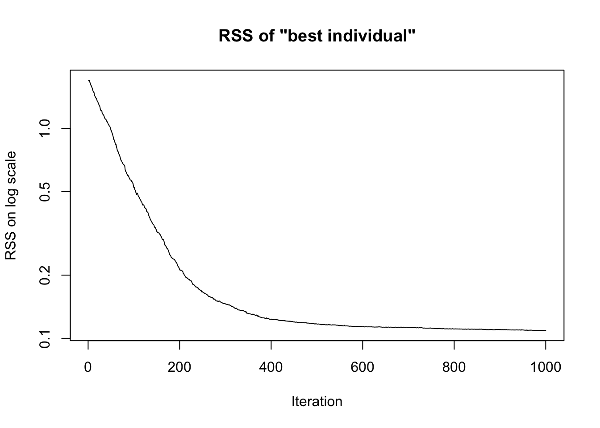

set.seed(1)
n <- 5 # number of data points
p <- 3 # number of predictors
beta <- rnorm(p)
X <- matrix(ncol = p, data = rnorm(n * p))
y <- (X %*% beta)[, 1] + rnorm(n)
dat <- as.data.frame(X)
dat$y <- yGenetic algorithm
R
Background
- We want to fit a model with parameters to data
- Given: Data points and a function to calculate a loss function for a given parameter set
- What we don’t have: Derivative of the loss function with respect to the parameters – hence, gradient-descent-type approaches don’t work
- Genetic algorithms are a population-based heuristic method that can optimize even when the loss function is non-differentiable or discontinuous
Example
True model
- We assume a linear model with \(n\) data points and \(p\) predictors: \[ y = X\beta + \epsilon, \epsilon_i \sim \mathcal{N} \]
- The true value of \(\beta\) is also sampled from a normal distribution
Optimization algorithm
- We define the residual sum of squares (RSS) as our loss function
- We sample a “population” of \(k\) \(\beta\) vectors from a normal distribution and store them in a \(p \times k\) matrix
- We repeat \(m\) times:
- Selection: The top 50% of individuals (i.e., those with the lowest RSS) are selected and then duplicated to maintain the population size
- Mutation: We nudge the elements of \(P\) by element-wise multiplication with a matrix with identical dimension filled with values sampled from a log-normal distribution with log_mean=0 and log_sd=s
- all updates maintain the sign of the parameter (=limitation of the algorithm)
Simulate data
Step by step
# Create parameter population:
k <- 6
P <- matrix(nrow = p, data = rnorm(k * p))
# Predict for first population:
X %*% P[, 1] [,1]
[1,] -2.6923821
[2,] -0.9079354
[3,] 2.5717631
[4,] -0.7271242
[5,] -1.9068247# Predict for all populations:
X %*% P [,1] [,2] [,3] [,4] [,5] [,6]
[1,] -2.6923821 -0.0364105 1.6766805 3.6372388 -0.75769629 2.55864211
[2,] -0.9079354 -0.1400709 -0.3928391 -1.4049246 -0.08305583 -0.05567578
[3,] 2.5717631 -2.0741455 1.7157369 -0.3375375 -0.25292504 0.25861132
[4,] -0.7271242 -0.6415608 0.7350531 0.1902818 -0.35503138 0.83636691
[5,] -1.9068247 0.3473681 -0.6325051 -0.9800653 -0.11743395 0.18277684# Residuals for all populations:
X %*% P - y [,1] [,2] [,3] [,4] [,5] [,6]
[1,] -4.4706386 -1.8146670 -0.1015760 1.8589823 -2.5359527 0.7803857
[2,] -0.2993083 0.4685562 0.2157880 -0.7962975 0.5255712 0.5529513
[3,] 0.8236239 -3.8222847 -0.0324023 -2.0856767 -2.0010643 -1.4895279
[4,] -1.2890299 -1.2034664 0.1731474 -0.3716238 -0.9169370 0.2744612
[5,] -0.6160802 1.6381126 0.6582395 0.3106793 1.1733106 1.4735214# Define function to calc RSS:
calc_RSS <- function(X, y, P) {
apply((X %*% P - y)^2, 2, sum)
}
# Calc RSS:
(l <- calc_RSS(X, y, P))[1] 22.7957041 22.2541658 0.5211913 8.6745785 12.9289711 5.3800447# determine indices of better half of population:
(ii <- order(l)[1:(k / 2)])[1] 3 6 4# select better half and replicate:
(P <- P[, rep(ii, each = 2)]) [,1] [,2] [,3] [,4] [,5] [,6]
[1,] 0.4179416 0.4179416 1.1000254 1.1000254 0.38767161 0.38767161
[2,] 1.3586796 1.3586796 0.7631757 0.7631757 -0.05380504 -0.05380504
[3,] -0.1027877 -0.1027877 -0.1645236 -0.1645236 -1.37705956 -1.37705956# mutate population:
(P <- P * rlnorm(length(P), sdlog = 0.05)) [,1] [,2] [,3] [,4] [,5] [,6]
[1,] 0.4126804 0.4037936 1.1431183 1.1221411 0.36638711 0.38061849
[2,] 1.4068617 1.3114568 0.7589008 0.7401753 -0.05780171 -0.05106812
[3,] -0.1056888 -0.1046786 -0.1719338 -0.1673538 -1.52039545 -1.41685050Whole game
Put algorithm in a function
genetic_algorithm_optimizer <- function(X, y, k,
m = 1000, s = 0.01) {
P <- matrix(nrow = p, data = rnorm(k * p))
rss_history <- vector(length = m)
for (i in 1:m) {
l <- calc_RSS(X, y, P)
rss_history[i] <- min(l)
# Selection: Keep the top 50% with lowest RSS and duplicate them
ii <- rep(order(l)[1:(k / 2)], 2)
P <- P[, ii]
# Mutation:
P <- P * rlnorm(length(P), sdlog = s)
}
list(P = P, rss_history = rss_history)
}Run algorithm
- Some suggestions for playing around with tuning parameters:
- Vary number of individuals \(k\) from 2 to 1000 (only non-odd integers please)
- Vary number of iterations \(m\) from 10 to 1000 (look at plot of RSS to adjust in a smart fashion)
- Vary standard deviation on log scale of mutation strength \(s\) from 0.001 to 0.1
sol <- genetic_algorithm_optimizer(X, y,
k = 10,
m = 1000,
s = 0.01)
plot(sol$rss_history,
type = 'l',
log = 'y',
main = 'RSS of "best individual"',
ylab = 'RSS on log scale',
xlab = 'Iteration')
data.frame(analytic_solution = coef(lm(y ~ - 1 + ., data = dat)),
genetic_algorithm_solution = sol$P[, 1]) analytic_solution genetic_algorithm_solution
V1 0.09093336 -0.005674275
V2 1.23160902 1.175974150
V3 -0.41057390 -0.459881868